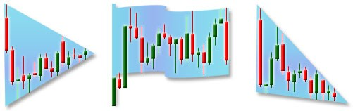

- No thick ebooks to read or complex software to install
- Live charts of the best trending currency pairs and time frames
- Audible alerts, email alerts
- User friendly interface
- Optionally, you can select / deselect pairs or time frames from the auto analysis and more options
- Quick overview of the trends on all time frames
- Now a special bonus! Automated chart analysis – recognizing "Triangles, Flags, Wedges and Trend Lines" on 34 currency pairs and all time frames!
So, how do you find out which Forex pair and time frame is best to trade?
Knowing the trend is crucial. Sure, you have experienced times when you entered the trade and waited during the choppy zone while some other pair was making a solid move. Trading the market that turns up and down and takes back all the profits during a series of losses feels like a slow torture...
Forex Trendy is a software solution to avoid trading during uncertain market periods. Instead, pick the best trending pair at the current time.
It uses no indicators, but the trend is determined by pure price action.
It quickly scans 34 Forex pairs on all time frames from minute to monthly. That's 34 x 9 = 306 charts. Forex Trendy analyzes all the charts for you every second! This way, you get the best trending pair and time frame at any time you want.
The software runs on our powerful computers so you instantly get the result online. Therefore, you can use your favorite trading platform such as MetaTrader, NinjaTrader, TradeStation... and there is nothing you have to download or install. It is very easy to use.
The truth is that most Forex systems or robots make money with the trend, but lose money in a choppy market. For example, imagine you trade a system that makes 50% winning trades, but another 50% are losing trades. By following the trend you would dramatically increase the odds of winning. If you increase the odds of winning by only 20%, that would make 70% winning trades and 30% losing trades. This can make the difference between losing (or breaking-even) and winning. In other words, by following the best trend it can only be better.
Avoid struggling with the erratic market chaos when the trend direction is unclear. Take only confident trades in the best markets at the current time.
You would be the one knowing which one particular (even exotic) pair is trending while other traders wouldn't notice it without this tool. Knowledge is power!
Forex Trendy is a much more sophisticated application capable of recognizing the most reliable continuation chart patterns. It scans through all the charts, on all time frames and analyzes every potential breakout. After considering the reliability of the pattern it tells you something like this:
And you see the chart with the trend lines forming the triangle and the breakout point – all that clearly drawn for you. The trend line looks solid with many touching points, so you are prepared for the massive breakout. Something you would miss unless you have supernatural powers to watch and analyze all the charts! Such events happen very rarely in one single chart. It's not just drawing trendlines, but it's actually looking for reliable patterns formed by strong trendlines having more than two touching points at a certain distance.
Not familiar with chart patterns and these fancy names? You will get the 30-page ebook with tons of real examples "Understanding The Myths Of Market Trends And Patterns" right after subscribing!
- Live charts of emerging patterns and the history of completed patterns
- Audible alerts and email alerts for the new completed patterns
- Forex Trendy uses sophisticated algorithm to consider which trend line or pattern looks better – with more touching points, etc. Many traders don't do this correctly!
- Chart pattern recognition is included in Forex Trendy for no extra fee!